Someone set a VCR running and let it record the Gulf War as it came into the house.
Years later the tape was played back and photographed, frame by frame. What follows is that recording in the order it aired — the anchors, the rooftops, the animated maps, and every commercial that ran between them, left in.
The breaks are the point. On the tape there is no seam between a relief map of the invasion and a man worrying about his hairline. There was none on the night either.
The tape opens mid-bulletin. Brokaw in New York, the Pentagon in the two-box, and a President at his desk — the war arriving the way most Americans received it, as an evening programme.
CoverageNBC Nightly News. Tom Brokaw in New York, Pentagon correspondent Fred Francis in the two-box.
CoverageFred Francis reporting from a cluttered NBC News workspace, an NBC monitor over his shoulder.
CoverageLocator map of Baghdad: the Al-Rasheed and Melia Mansour hotels, the international airport, the Tigris.
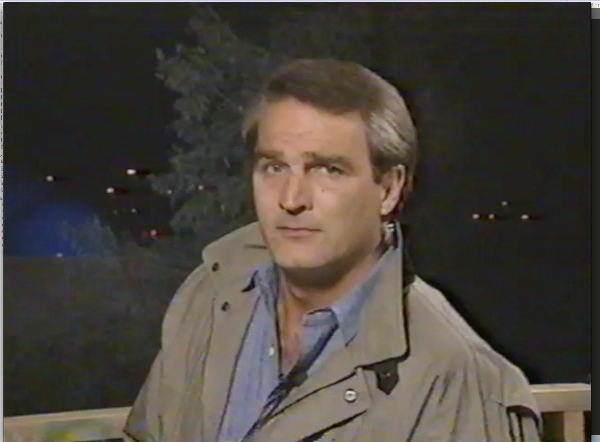
CoverageA correspondent live on a Baghdad rooftop after dark, city lights behind him.
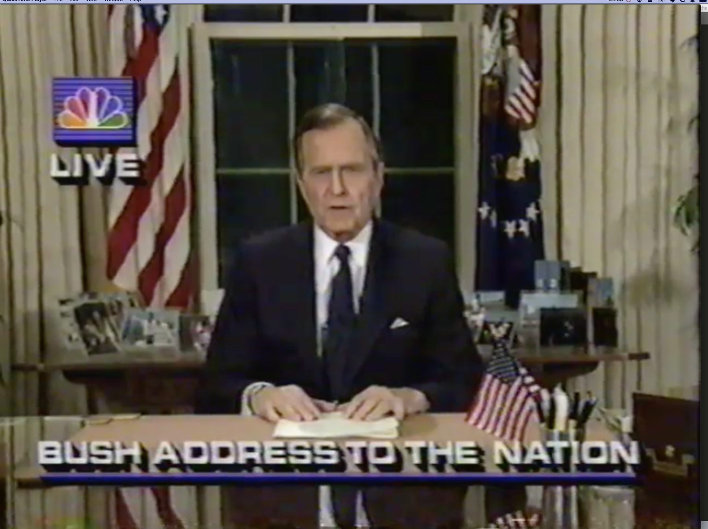
CoverageNBC goes LIVE to the Oval Office. The chyron reads BUSH ADDRESS TO THE NATION.
CoverageDefense Secretary Dick Cheney at a podium, carried on the Davenport, Iowa affiliate KWQC-TV.
CoverageAn anchor beside a graphic labelled DEFIANCE: a fighter jet, a tank, the Iraqi flag.II
Baghdad
Before the maps take over there is still a city on screen: buses running, a man smoking against a tiled wall, officials with names and titles. These are among the last ordinary pictures out of Iraq.
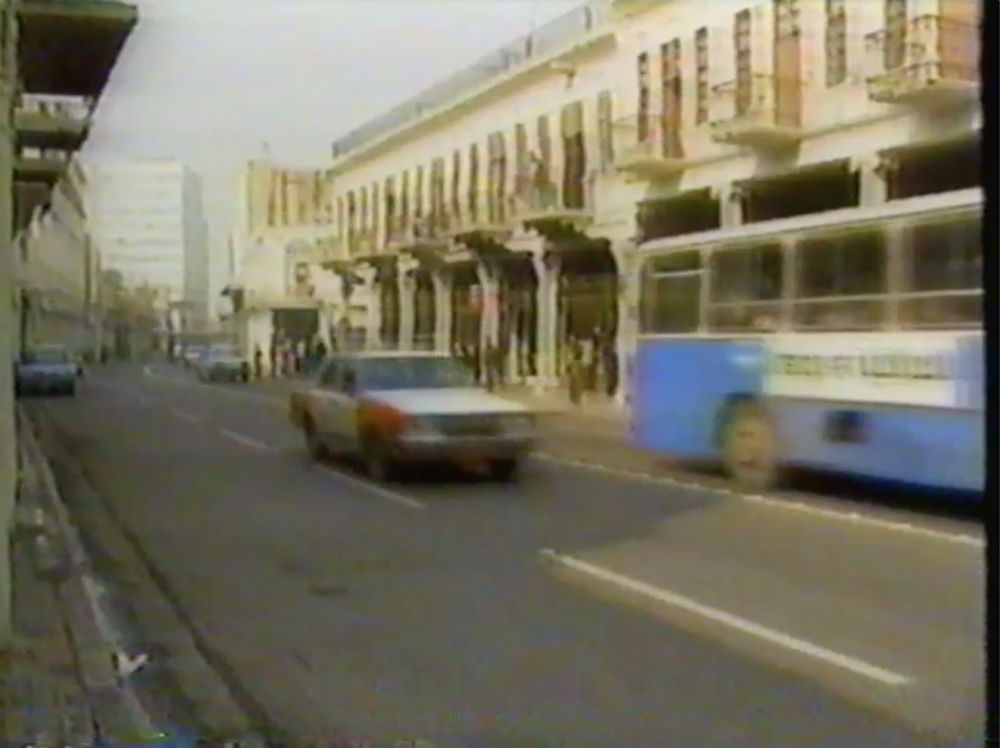
CoverageDaytime street footage from Baghdad. A city bus and passing cars, traffic still moving.
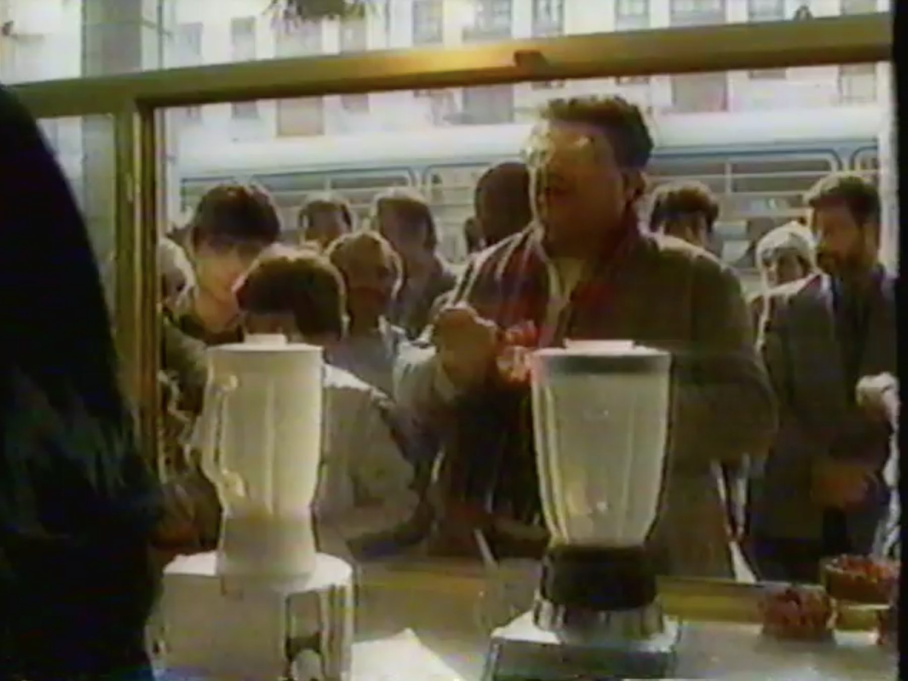
CoverageA crowded room shot through glass, blenders lined up in the foreground.
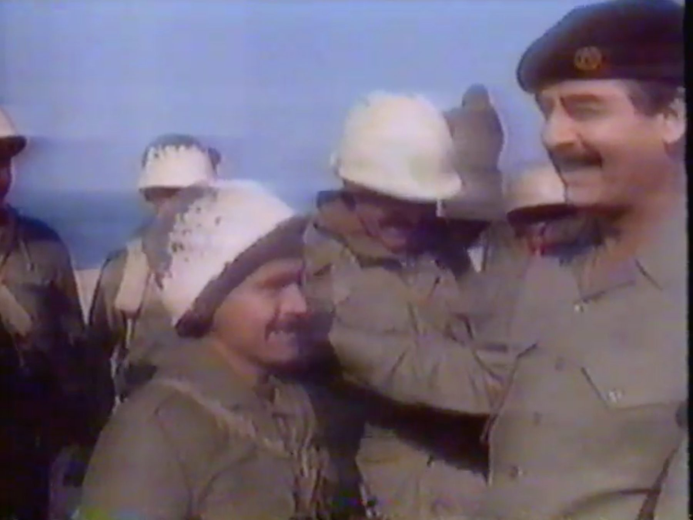
CoverageSaddam Hussein among helmeted troops, shaking hands in a scrum.
CoverageSaadi Mahdi Saleh, identified on screen as Speaker of Iraq's National Assembly.
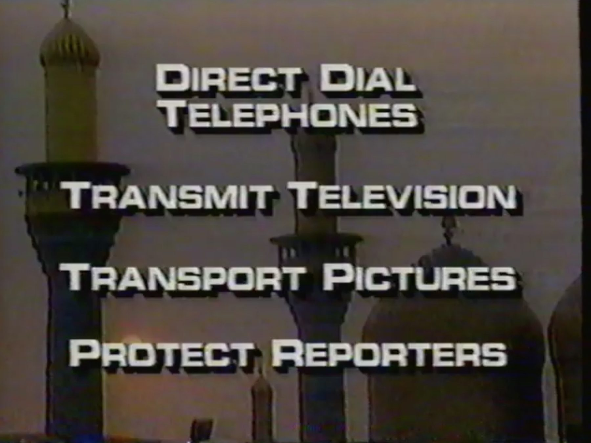
CoverageMinarets behind a stack of title cards: DIRECT DIAL TELEPHONES, TRANSMIT TELEVISION, TRANSPORT PICTURES, PROTECT REPORTERS.
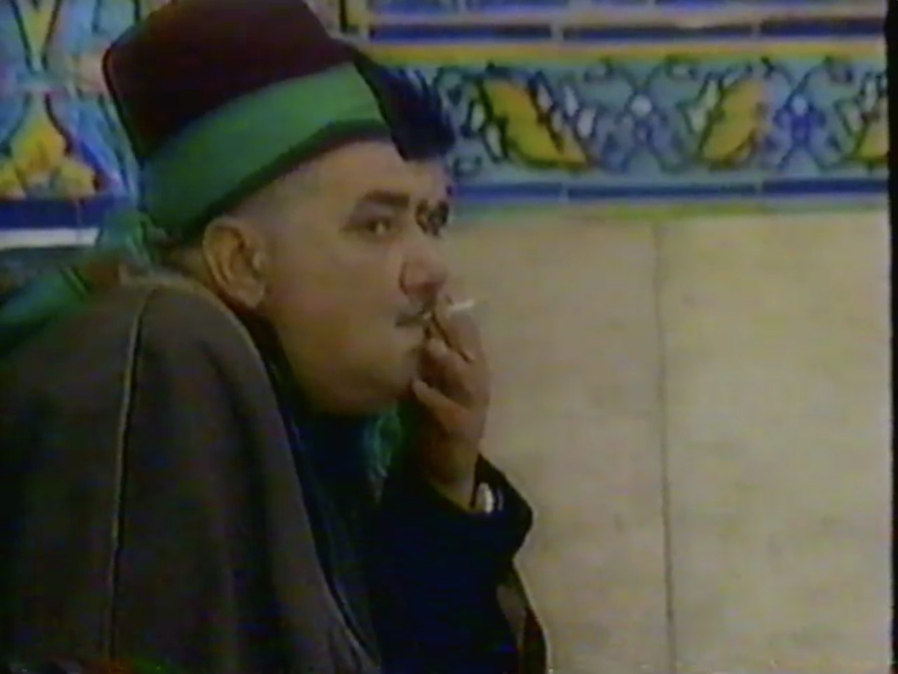
CoverageA man in a fez smoking beside a tiled wall.
CoverageRelief map of the theatre: Syria, Iran, Jordan, Saudi Arabia, Kuwait, with aircraft icons massed over Iraq.III
The First Break
Then the coverage stops, on schedule, for hair dye, prunes and a Kmart sale. Nothing on the tape marks the transition. One frame is a relief map of the invasion; the next is a man worrying about his hairline.
CommercialCut to commercial. Clairol Option for men, a worried-looking customer mid-consultation.
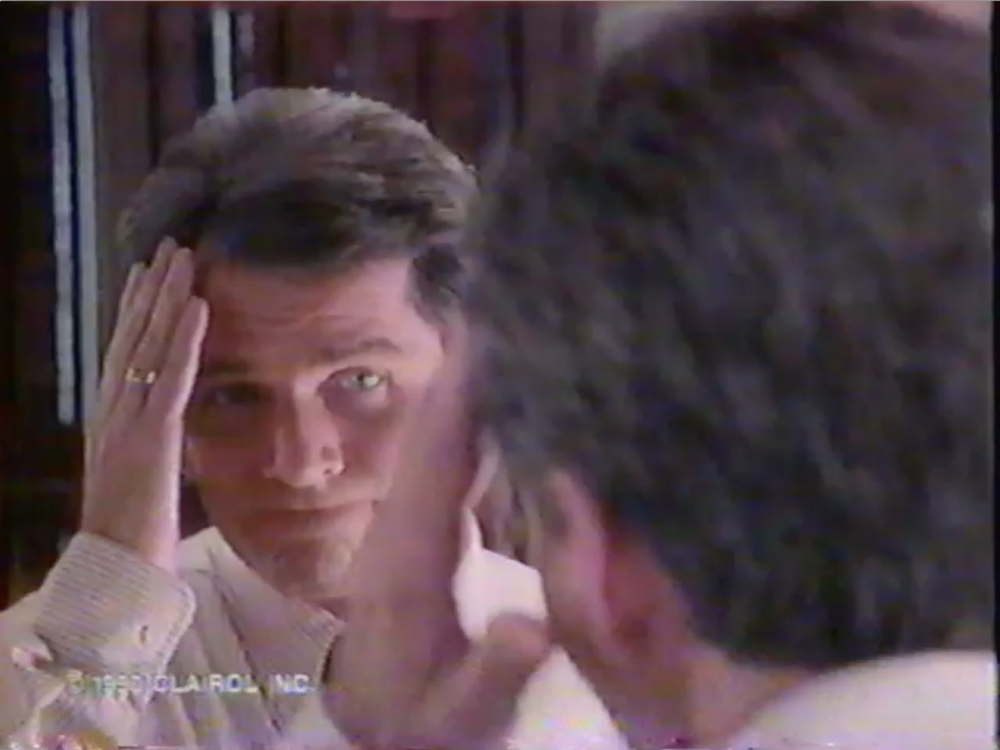
CommercialClairol Option. The hand goes to the hairline.
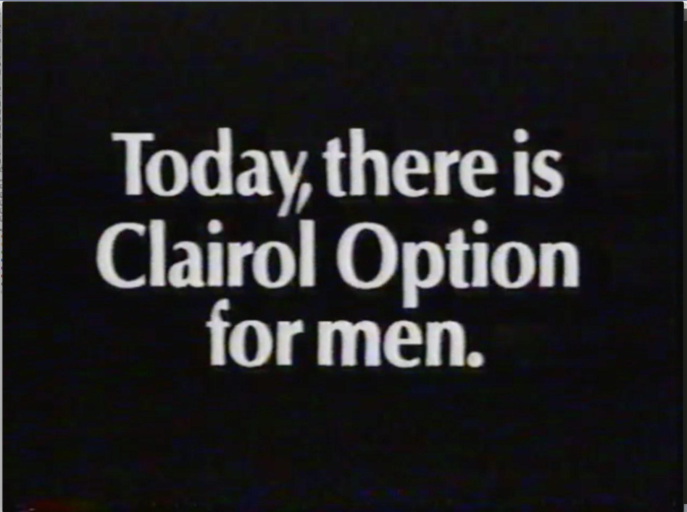
CommercialToday, there is Clairol Option for men.
CommercialThe product held to camera.
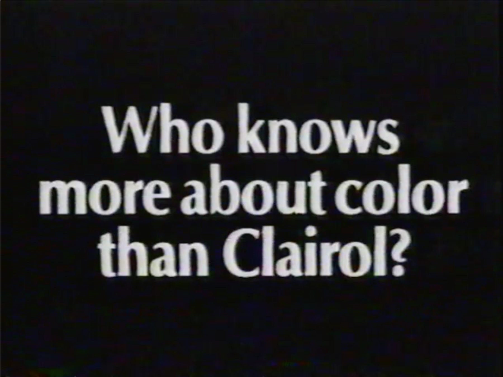
CommercialWho knows more about color than Clairol?
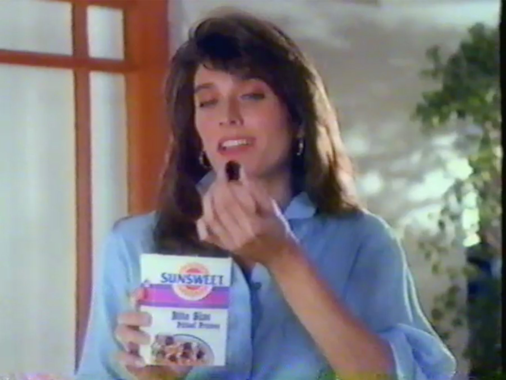
CommercialSunsweet bite-size pitted prunes.
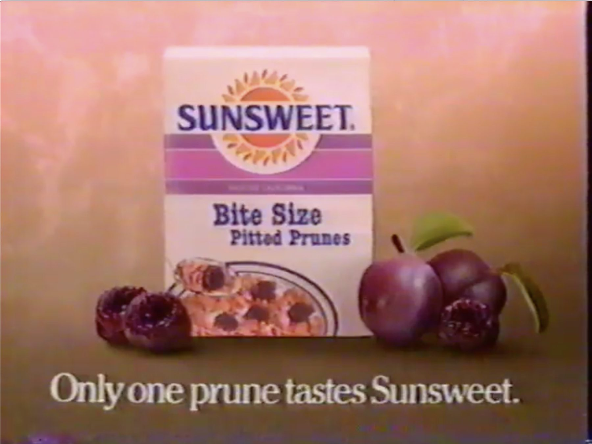
CommercialOnly one prune tastes Sunsweet.
CommercialKmart. The quality you need, the price you want. Sale ends Saturday.IV
The Map Moves
Back from the break the war has become cartography — icons massing, missiles animating toward a capital. The network gives the whole thing a title card and a broadcast slot.
CoverageBack to the map. Aircraft icons strung across Iraq from Saudi Arabia and the Gulf.